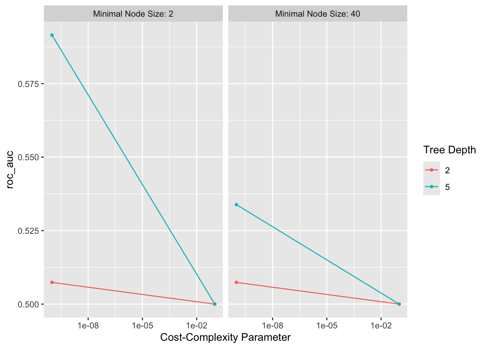
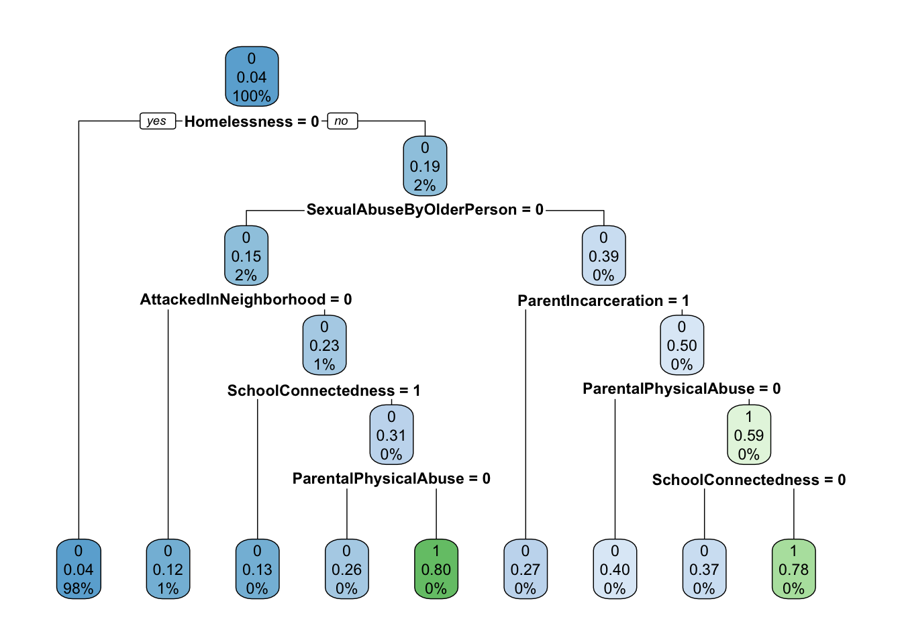

analysis_train <- readRDS(here("models","data", "analysis_train.rds"))
analysis_folds <- readRDS(here("models","data", "analysis_folds.rds"))Classification(Decision) Tree
Decision Trees Machine Learning Model for Weapon Carrying School
Setting Up the Environment
Loading the Data
reciepe
carry_weapon_recipe_tree <-
recipe(formula = WeaponCarryingSchool ~ ., data = analysis_train) |>
step_impute_mode(all_nominal_predictors()) |>
step_impute_mean(all_numeric_predictors())Model Specification
carry_weapon_spec_tree <-
decision_tree(
cost_complexity = tune(),
tree_depth = tune(),
min_n = tune()
) |>
set_engine("rpart") |>
set_mode("classification")Creating the Workflow
carry_weapon_workflow_tree <-
workflow() |>
add_recipe(carry_weapon_recipe_tree) |>
add_model(carry_weapon_spec_tree)
carry_weapon_workflow_tree══ Workflow ════════════════════════════════════════════════════════════════════
Preprocessor: Recipe
Model: decision_tree()
── Preprocessor ────────────────────────────────────────────────────────────────
2 Recipe Steps
• step_impute_mode()
• step_impute_mean()
── Model ───────────────────────────────────────────────────────────────────────
Decision Tree Model Specification (classification)
Main Arguments:
cost_complexity = tune()
tree_depth = tune()
min_n = tune()
Computational engine: rpart Model Tuning - (Tuning for the tree - The Grid)
tree_grid <-
grid_regular(
cost_complexity(),
tree_depth(c(2,5)),
min_n(),
levels = 2)
tree_grid# A tibble: 8 × 3
cost_complexity tree_depth min_n
<dbl> <int> <int>
1 0.0000000001 2 2
2 0.1 2 2
3 0.0000000001 5 2
4 0.1 5 2
5 0.0000000001 2 40
6 0.1 2 40
7 0.0000000001 5 40
8 0.1 5 40Tuning for the tree
cart_tune <-
carry_weapon_workflow_tree %>%
tune_grid(resamples = analysis_folds,
grid = tree_grid,
metrics = metric_set(roc_auc),
control = control_grid(save_pred = TRUE)
)
saveRDS(cart_tune, here("model_outputs", "tree_tune.rds"))Choosing the best CP
show_best(cart_tune, metric = "roc_auc")# A tibble: 5 × 9
cost_complexity tree_depth min_n .metric .estimator mean n std_err
<dbl> <int> <int> <chr> <chr> <dbl> <int> <dbl>
1 0.0000000001 5 2 roc_auc binary 0.592 5 0.0226
2 0.0000000001 5 40 roc_auc binary 0.534 5 0.0167
3 0.0000000001 2 2 roc_auc binary 0.507 5 0.00740
4 0.0000000001 2 40 roc_auc binary 0.507 5 0.00740
5 0.1 2 2 roc_auc binary 0.5 5 0
# ℹ 1 more variable: .config <chr>autoplot(cart_tune)
Choosing the best hyperparameters
best_weapon_carrying_tree <- select_best(
cart_tune,
metric = "roc_auc")
best_weapon_carrying_tree# A tibble: 1 × 4
cost_complexity tree_depth min_n .config
<dbl> <int> <int> <chr>
1 0.0000000001 5 2 Preprocessor1_Model3# cost_complexity = 1e-10; This is extremely small, meaning almost no penalty is applied for having a more complex tree. OVERFITTINGFinalize the Workflow
carry_weapon_final_workflow_tree <-
finalize_workflow(carry_weapon_workflow_tree, best_weapon_carrying_tree)
carry_weapon_final_workflow_tree══ Workflow ════════════════════════════════════════════════════════════════════
Preprocessor: Recipe
Model: decision_tree()
── Preprocessor ────────────────────────────────────────────────────────────────
2 Recipe Steps
• step_impute_mode()
• step_impute_mean()
── Model ───────────────────────────────────────────────────────────────────────
Decision Tree Model Specification (classification)
Main Arguments:
cost_complexity = 1e-10
tree_depth = 5
min_n = 2
Computational engine: rpart Fit the tree
carry_weapon_fit_tree <- fit(
carry_weapon_final_workflow_tree,
analysis_train)
carry_weapon_fit_tree
saveRDS(carry_weapon_fit_tree, here("model_outputs", "tree_fit.rds"))Predictions: Review fit on the training data
weapon_pred_tree <-
augment(carry_weapon_fit_tree, analysis_train) |>
select(WeaponCarryingSchool, .pred_class, .pred_1, .pred_0)ROC graph
roc_plot_training_tree <-
weapon_pred_tree |>
roc_curve(truth = WeaponCarryingSchool,
.pred_0) |>
autoplot()
roc_plot_training_tree
# very bad sensitivity vs specificity
saveRDS(roc_plot_training_tree, here("roc_graphs", "tree.rds"))Review on Resamples
fit_resamples(carry_weapon_final_workflow_tree,
resamples = analysis_folds) |>
collect_metrics()# A tibble: 3 × 6
.metric .estimator mean n std_err .config
<chr> <chr> <dbl> <int> <dbl> <chr>
1 accuracy binary 0.955 5 0.00141 Preprocessor1_Model1
2 brier_class binary 0.0412 5 0.00135 Preprocessor1_Model1
3 roc_auc binary 0.592 5 0.0226 Preprocessor1_Model1# area under curve = 0.592; accuracy = 0.955plot the tree
carry_weapon_fit_tree |>
extract_fit_engine() |>
rpart.plot::rpart.plot(roundint=FALSE)
